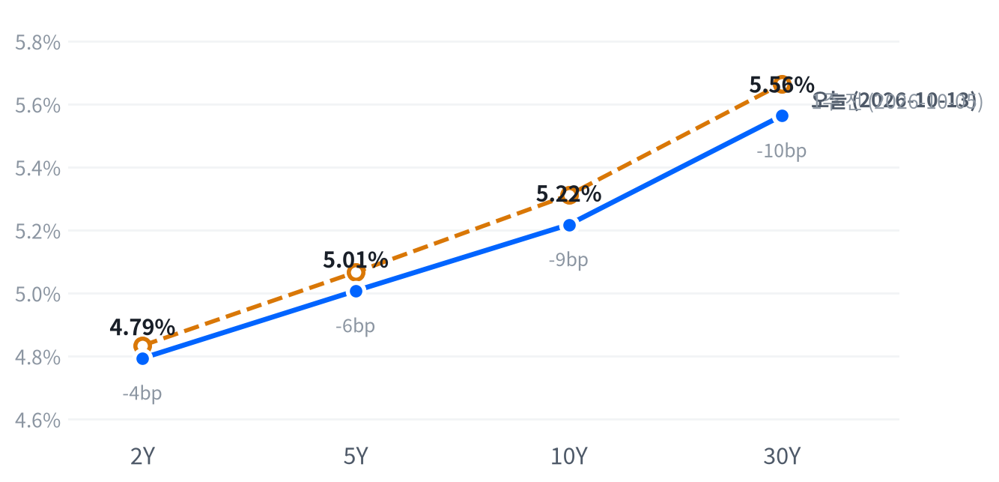

중국 CXMT의 서버용 D램 계획 보도 2거래일째, 매도는 D램 업체와 장비주에 몰렸고 엔비디아·Meta·에너지가 지수를 받쳤다. 국채는 장기물만 내려 커브가 평탄해졌고 2년물은 거의 움직이지 않았다.
광학주와 엔비디아가 반등해 메모리 하락을 AI 하드웨어 관련주 전반의 포지션 축소로 본 전날 판단은 약해졌다. 다음 방향은 10월 14일 9월 CPI 뒤 2년물 반응과 15일 TSMC 실적에서 갈린다.
중국 CXMT의 서버용 D램 계획이 보도된 지 2거래일째, 매도는 D램 업체에 집중됐다. 앞선 한국장에서 SK하이닉스가 10.09% 급락했고 마이크론은 3.62% 더 내렸다. 반면 엔비디아와 광학주는 반등했고 에너지가 강해 S&P 지수는 거의 제자리에서 끝났다.
이날 흐름은 메모리 하락을 AI 하드웨어 관련주 전반의 포지션 축소로 본 10월 12일 판단을 약하게 만들었다고 판단한다. 포지션 축소였다면 전날 가장 크게 빠진 광학주도 함께 내렸어야 한다. 그러나 AI 인프라 다섯 종목은 평균 0.17% 올랐고 D램 업체만 다시 밀렸다. 가장 강한 반론은 한국장의 메모리 급락이 미국 메모리주로 번진 수급 충격이라는 설명이고, 이 경우 D램 가격 사이클에 대한 평가는 바뀌지 않았다. Rayliant의 필립 울은 CXMT가 대량 생산을 아직 증명하지 않았다며 이번 매도를 취약한 AI 심리의 신호로 봤다(Yahoo Finance). 두 설명은 한국 메모리주가 반등하는 날 마이크론이 따라 오르는지에서 갈린다.
반도체·AI 하드웨어 업종의 3개월 상대수익률은 한 주 사이 크게 나빠졌고, 이날 메모리·장비주 약세가 그 흐름을 이어 갔다. 메모리를 AI 하드웨어 관련주와 같은 위험으로 볼지 중국 D램 공급이라는 별도 위험으로 볼지는 16일 종가까지 마이크론과 HDD 두 종목의 상대 성과로 정한다. 이 판단에 맞는 수단은 마이크론과 HDD의 상대 포지션이지만, 차입·비용 자료가 없어 아이디어로 올리지 않는다. 금리 쪽은 2년물이 거의 움직이지 않아 CPI 전까지 정책 기대에 대한 판단을 더하지 않는다.
10월 12일 종가 대비 16일 종가까지의 누적 수익률에서 마이크론이 시게이트·웨스턴디지털 평균보다 3.88%p 넘게 뒤처지면, 포지션 축소라는 판단은 약해지고 D램 경쟁 재평가 쪽으로 무게를 옮긴다. 10월 14일 08:30(ET) 9월 CPI에서 근원 전월비가 컨센서스 0.2%와 뚜렷이 갈렸는데도 2년물 종가가 13일 종가 대비 같은 방향으로 3.8bp 미만 움직이거나 반대로 움직이면, 단기금리가 물가 지표를 따라 움직인다는 판단은 약해진다. AI 공급망 투자의 수익성 우려가 타당한지는 10월 15일 TSMC 3분기 실적에서 확인한다.
| 지수 | 종가 | 등락률 | 기준일 |
|---|---|---|---|
| 닛케이225 | 69,030.92 | -0.02% | 10월 9일 |
| 항셍 | 24,271.20 | +0.25% | 10월 12일 |
| 상해종합 | 3,797.24 | -0.43% | 10월 12일 |
| DAX | 25,277.68 | +0.76% | 10월 12일 |
| FTSE100 | 10,650.33 | -0.06% | 10월 13일 |
| 유로스톡스50 | 6,201.21 | +0.45% | 10월 12일 |
| VIX | 15.27 | +0.39% | 10월 13일 |
아시아·유럽 지수는 10월 13일 종가가 FTSE100만 들어와 나머지는 직전 거래일 값이다. 일본은 10월 12일 체육의 날로 쉬어 닛케이는 10월 9일 종가다.
표에 잡힌 아시아와 유럽은 보합권이었고, 아시아 안에서도 지역별로 갈렸다(항셍 +0.25%, 상해종합 -0.43%). 표에 없는 10월 13일 한국장이 미국 장 직전의 분위기를 보여 줬다. 삼성전자가 7.39%, SK하이닉스가 10.09% 내렸다. 유럽에서 10월 13일 종가가 들어온 FTSE100은 0.06% 내려 보합이었고, VIX는 15.27로 낮은 수준을 지켰다.
야간 선물은 좁은 범위에서 움직였다. S&P 선물(ES)은 한국 증시가 열려 있던 전날 밤 22:30(ET)에 7,836 저점을 찍고 06:00 7,864까지 올랐다가 개장 전에 밀렸다. 현물은 S&P -0.15%, 나스닥 -0.37%의 갭으로 하락 출발해, 메모리 비중이 큰 나스닥의 출발이 더 약했다.
세 지수 모두 하루 범위의 중간에서 끝났다. 나스닥은 개장가 부근이 저점이었고 개장 30분 만에 고점까지 올랐다가 오후 내내 밀렸다. 러셀2000은 오전에 시가 대비 0.68% 밀려 가장 약했다.
고점권·저점권 경계는 최근 2,253거래일의 일간 종가 위치 이력으로 다시 잰 기준이다.
지수 밑에서는 업종끼리 서로 상쇄했다. 메모리·장비주가 기술 업종을 끌어내렸지만 엔비디아와 Meta가 받쳤고, 헬스케어는 J&J 실적에 밀렸으며, 대형 은행 3분기 실적은 종목별로 갈렸다. 장 마감 뒤 Bank of America는 FinCEN·OCC로부터 총 12.1억 달러의 제재금을 부과받아 시간외에서 약 2% 내렸다고 CNBC는 전했다. 이 은행의 실적은 10월 14일에 나온다.
| 지수 | 종가 | 등락률 |
|---|---|---|
| S&P500 가치주 | 234.07 | +0.07% |
| S&P500 | 7,805.45 | -0.02% |
| S&P500 성장주 | 144.56 | -0.04% |
| 나스닥 | 27,204.38 | -0.15% |
| 다우존스 | 51,670.10 | -0.35% |
| 러셀2000 | 2,783.37 | -0.40% |
| 섹터 | 등락률 |
|---|---|
| 에너지 | +1.80% |
| 커뮤니케이션서비스 | +0.74% |
| 유틸리티 | +0.58% |
| 소재 | +0.57% |
| 경기소비재 | +0.08% |
| 기술 | -0.04% |
| 부동산 | -0.21% |
| 필수소비재 | -0.26% |
| 산업재 | -0.28% |
| 금융 | -0.42% |
| 헬스케어 | -1.35% |
메모리 매도에도 S&P500은 7,805로 0.02% 내리는 데 그쳤고, 최근 2년(504거래일) 가운데 이보다 높았던 날이 3일뿐인 고점 부근을 지켰다. 나스닥은 0.15% 내린 27,204, 다우는 0.35% 내린 51,670, 러셀2000은 0.40% 내렸다. 네 지수 모두 평소 하루 움직임의 절반에도 못 미쳤다.
지수의 작은 하락은 헬스케어가 만들었다. 헬스케어(-1.35%)가 지수에서 0.135%p를 덜어냈고 금융(-0.42%)이 0.046%p를 더 뺐다. 반대편에서는 커뮤니케이션서비스(+0.74%)가 0.095%p, 에너지(+1.80%)가 0.043%p를 보탰다. 기술(-0.04%)의 기여는 0.014%p로 거의 없었고, 업종 합으로 설명되지 않는 부분은 +0.02%p다.
업종 기여도는 비중을 쓰지 않고 최근 252거래일 수익률로 추정한 값이다. 소재와 부동산은 추정에서 빠졌다.
기술 업종이 제자리였던 것은 메모리·장비주 약세를 엔비디아(+0.97%)가 상쇄했기 때문이다. 엔비디아는 개장 직후 저점에서 장 내내 올라 고점 부근에서 끝났다. 성장주(-0.04%)와 가치주(+0.07%)의 차이도 작아, 스타일 한쪽으로 기운 날은 아니었다. 지수 차원의 상승 추세가 흔들린 것이 아니라 업종 안쪽에서 자금이 옮겨 간 하루로 본다.
대형 은행 실적은 엇갈렸다. CNBC에 따르면 JPMorgan은 주당순이익 5.57달러로 예상(5.90달러)에 못 미쳤지만 2026년 순이자이익 가이던스를 올렸고, Goldman Sachs는 17.01달러로 예상(13.65달러)을 크게 넘었다. Wells Fargo는 매출(218.7억 달러)이 실망스러워 약 3% 내렸다. Fortune은 은행들이 금리 상승과 끈적한 물가를 부담 요인으로 경고했다고 전했다. 금융 업종의 약세를 되돌릴 만한 실적은 아니었다.
| 만기 | 종가 | 전일比(bp) | 1주 전 | 주간 변화(bp) |
|---|---|---|---|---|
| 2Y | 4.793% | +0.2 | 4.833% | -4.0 |
| 5Y | 5.007% | -1.4 | 5.066% | -5.9 |
| 10Y | 5.217% | -2.7 | 5.311% | -9.4 |
| 30Y | 5.563% | -3.6 | 5.664% | -10.1 |
네이버 국채 종가, 전 만기 10월 13일 기준. 10월 12일은 국채 현물시장이 쉬어 전일比는 10월 9일 종가 대비이고, 1주 전은 10월 5일이다.

1주 전(10월 5일)과 비교하면 전 만기가 내렸고, 30년물이 2년물보다 두 배 넘게 내려 커브가 평탄해졌다.
장기물만 내리고 2년물은 제자리여서 커브가 불 플래트닝했다. 10년물은 2.7bp 내린 5.217%로 최근 2년(504거래일) 가운데 이보다 높았던 날이 11일뿐인 고점권에 있고, 30년물은 3.6bp 내린 5.563%였다. 2년물은 4.793%로 0.2bp 오르는 데 그쳤다. 장기물의 하락폭은 평소 하루 움직임과 비슷한 크기다.
2s10s는 42.4bp, 5s30s는 55.6bp다. 한 주 전과 견줘도 모양이 같다. 30년물이 10.1bp, 2년물이 4.0bp 내려 한 주 내내 장기물이 금리 하락을 이끌었다.
Newsquawk는 장기물 하락을 기술주 매도 속 안전자산 수요로 설명했다. 같은 날 윌리엄스 뉴욕 연은 총재는 올해 한 번 더 인상하는 것이 여전히 적절하지만 2027년에는 추가 인상이 필요 없을 수 있다고 말했고(CNBC), 시장은 비둘기파로 반응했다가 곧 되돌렸다고 Newsquawk는 전했다. 2년물이 움직이지 않은 것을 보면 정책 경로가 다시 매겨졌다기보다 장기물 수요가 늘어난 하루로 본다. 월러 이사는 장기금리 상승이 긴축의 일부를 대신하고 있다고 말했다.
명목금리를 실질금리와 기대인플레로 나눈 최신 자료는 10월 9일 것이다. 그날 10년물 2bp 상승은 실질금리 4bp 상승과 기대인플레 2bp 하락의 합이었다. 이날 10년 기대인플레는 2.33%로 변하지 않아, 10년물 하락은 실질금리 쪽에서 나왔을 가능성이 크다. 이 값은 위험·유동성 프리미엄이 섞인 물가 보상이라 순수한 물가 기대와는 다르다. 10년 실질금리의 10월 13일 값이 갱신되면 확인된다. 하이일드 스프레드는 10월 12일 3.11%로 움직이지 않아 신용 쪽 긴장은 없었다.
5년 뒤 5년 명목금리 5.46%, 실질 3.14%(10월 9일 기준). 기대인플레 쪽 수치와의 교차검증은 이날 할 수 없었고, 위험 프리미엄이 섞인 값이라 미래 단기금리의 기대치로 읽지 않는다.
| 통화쌍 | 종가 | 등락률 | 기준일 |
|---|---|---|---|
| DXY | 102.21 | -0.36% | 10월 13일 |
| USD/KRW | 1,340.13 | -0.05% | 10월 13일 |
| USD/JPY | 158.35 | +0.09% | 10월 13일 |
| EUR/USD | 1.1199 | -0.05% | 10월 13일 |
달러지수는 0.36% 내린 102.21로, 평소와 비슷한 크기로 움직였다. 원/달러는 1,340원으로 같은 2년 가운데 이보다 낮았던 날이 4일뿐인 원화 강세 구간에 있고, 한국 증시가 급락한 날에도 거의 움직이지 않았다.
달러지수의 하루 움직임은 최근 60거래일 평균 하루 폭의 1.17배다.
달러지수 하락을 금리차로 설명하기는 어렵다. 2년물이 그대로였고, 유로/달러(-0.05%)와 엔/달러(+0.09%) 어느 쪽도 달러 약세를 확인하지 않았다. 엔/달러는 미국 개장 무렵 157.82까지 내렸다가 되올랐다. 주요 통화쌍이 따라오지 않은 달러지수 하락이라 하루 움직임에 큰 의미를 두지 않는다. 금리차가 달러를 다시 움직이는지는 10월 14일 CPI 뒤 2년물과 달러가 같은 방향으로 가는지에서 드러난다.
| 품목 | 종가 | 등락률 |
|---|---|---|
| WTI | $94.71 | +1.03% |
| Brent | $106.27 | -0.36% |
| 천연가스 | $3.317 | +4.74% |
| 금 | $4,185.30 | -0.13% |
에너지 업종을 끌어올린 WTI는 1.03% 오른 94.71달러로, 이보다 높았던 날이 49일뿐인 높은 수준이다. 브렌트는 0.36% 내린 106.27달러였다. 천연가스가 4.74% 올라 가장 크게 움직였지만 이를 설명하는 보도는 찾지 못했다.
WTI는 아침 저점에서 장 내내 올라 하루 고점 부근에서 끝났다. 주말 사이 후티의 사우디 공격과 호르무즈 인근 유조선 공격 보도가 유가를 받쳤고(oilprice.com), 트럼프 대통령은 후티가 중간선거 전에 유가를 끌어올리려 한다고 주장했다(Al Jazeera). 그런데 브렌트가 내린 날 WTI만 올라 두 유종의 가격 차는 11.56달러로 전날보다 좁혀졌다. 지정학 위험이 더 붙었다면 국제 유종이 먼저 올랐어야 하므로, WTI 강세는 미국 쪽 수급 요인일 수 있지만 확인된 재료는 없다.
금은 0.13% 내린 4,185달러로, 오후에 저점을 찍은 뒤 일부를 되찾았다. 금리와 달러가 함께 내린 날 금이 내린 것은 보통의 방향과 어긋난다. 10년 실질금리의 최신 값이 10월 9일(2.91%)이라, 이날 금 약세를 실질금리로 설명할 근거는 없다.
미국 경기 국면은 골디락스 판단을 10일째 유지한다. 이날 나온 공식 통계는 9월 기존주택 판매 하나였고, 이 발표로 생산·활동 판단이 보합에서 악화로 바뀌었다. 그래도 성장 점수(-0.117)는 보합 안쪽에 머물러 국면을 옮길 만큼 기울지 않았다.
고용은 개선, 생산·활동과 소비는 악화로 갈려 성장 좌표는 보합에 머문다. 물가 점수(-0.928)는 여덟 지표가 모두 둔화를 가리킨다. 물가 판단은 10월 14일 9월 CPI에서, 성장 판단은 11월 6일 10월 고용에서 다시 점검한다.
고용은 완만한 개선이다(7개 중 4개). 계속 실업수당 청구가 9월 26일 주간 1,716,000건으로 4주 평균이 뚜렷이 줄었고, 신규 청구도 10월 3일 주간 197,000건으로 4주 평균이 완만하게 내려왔다. 해고가 늘지 않는다는 신호다. 반대편에는 9월 비농업 고용 증가가 29K에 그친 채용 둔화가 남아 있다. 고용축 +0.535
| 지표 | Actual | Forecast | Previous | 발표일 | 컨센 대비 | 직전 대비 | 추세 |
|---|---|---|---|---|---|---|---|
| 구인건수(8월) | 7,079K | — | 7,335K | 2026-08 기준월 | 악화 | 악화(미미) · 3개월 평균 7,336K → 7,199K | |
| 신규 실업수당 청구 | 197,000 | — | 199,000 | 2026-10-08 (10월 3일 주간) | 개선 | 개선(완만) · 4주 평균 206K → 198K | |
| 신규 청구 4주 평균 | 198,000 | — | 200,500 | 2026-10-08 (10월 3일 주간) | 개선 | 개선(완만) · 4주 평균 206K → 201K | |
| 계속 실업수당 청구 | 1,716,000 | — | 1,699,000 | 2026-10-08 (9월 26일 주간) | 악화 | 개선(뚜렷) · 4주 평균 1,777K → 1,711K | |
| 비농업 고용 변화(9월) | +29K | — | +133K | 2026-09 기준월 | 악화 | 악화(미미) · 3개월 평균 +81K → +51K | |
| 실업률(9월) | 4.2% | — | 4.1% | 2026-09 기준월 | 악화 | 개선(미미) · 3개월 평균 4.27% → 4.13% | |
| 평균시간당임금 MoM(9월) | +0.13% | — | +0.32% | 2026-09 기준월 | 악화 | 악화(미미) · 3개월 평균 +0.21% → +0.19% |
생산·활동은 악화로 바뀌었다(5개 중 4개). 기존주택 판매는 9월에 늘었지만 석 달 평균으로는 앞 석 달보다 뚜렷이 낮고, 내구재 주문은 8월 -0.07%로 석 달 평균이 완만하게 꺾였다. 세기는 아직 미미하다. 신규주택 판매(8월 684K)만 반대편에서 조금 나아졌다. 생산·활동축 -0.467
| 지표 | Actual | Forecast | Previous | 발표일 | 컨센 대비 | 직전 대비 | 추세 |
|---|---|---|---|---|---|---|---|
| 산업생산 MoM(8월) | +0.02% | — | +0.20% | 2026-08 기준월 | 악화 | 보합 · 3개월 평균 +0.24% → +0.14% | |
| 내구재주문 MoM(8월) | -0.07% | — | +0.87% | 2026-08 기준월 | 악화 | 악화(완만) · 3개월 평균 +1.95% → +0.46% | |
| 신규주택판매(8월) | 684K | — | 643K | 2026-08 기준월 | 개선 | 개선(미미) · 3개월 평균 645K → 666K | |
| 기존주택판매(9월) | 399만 | 395만 | 393만 | 2026-10-13 | 상회▲ | 개선 | 악화(뚜렷) · 3개월 평균 4,120K → 3,993K |
| 실질GDP QoQ 연율(2분기) | +2.2% | — | +2.5% | 2026년 2분기 기준 | 악화 | — |
NAR이 배포한 보도자료에 따르면 9월 기존주택 판매는 연율 399만 건(3990000건)으로 8월보다 1.5% 늘어 Reuters 서베이 예상(395만 건)을 웃돌았다. 1년 전보다는 2.2% 적고, 400만 건 아래에 두 달째 머물렀다(Inman). 8월치는 한 달 전 398만 건으로 발표됐다가 393만 건으로 낮아져, 증가율의 상당 부분은 낮아진 기준에서 나왔다.
가격과 재고는 매수자 쪽으로 기울었다. 중위가격은 41만 7,500달러로 1년 전보다 1.3% 올라 9월 기준 최고였다. 8월(42만 7,700달러)보다는 2.4% 낮았다. 재고는 160만 채로 1.9% 늘어 4.8개월분이 됐고, Reuters는 2019년 11월 이후 가장 많은 재고라고 전했다. 중위 판매 기간은 33일로 8월(31일)보다 길어졌고, 생애 첫 구매자 비중은 31%로 올랐다. 로런스 윤 NAR 수석이코노미스트는 재고 증가와 판매 기간 연장이 구매자의 협상력을 높인다고 설명했다.
거래량은 예상을 조금 웃돌았지만 저점권이고, 집값 상승 압력은 누그러지는 쪽이라고 판단한다. BMO는 30년 모기지 금리가 7.5%에 다가서 주택시장이 한동안 부진할 것으로 봤다(Reuters). 계약 체결 시점 기준이라 7~8월 금리 환경을 반영한다. 이 발표는 생산·활동 판단을 악화로 돌렸지만 성장 좌표와 정책 경로는 움직이지 않았다.
소비는 악화 쪽이지만 세기는 미미하다(2개 중 1개). 소매판매는 8월에 1.13% 늘었지만 석 달 평균이 앞 석 달보다 뚜렷이 낮다. 미시간대 소비자심리는 8월 51.7로 석 달 평균이 조금 나아져 반대편에 선다. 소비축 -0.419
| 지표 | Actual | Forecast | Previous | 발표일 | 컨센 대비 | 직전 대비 | 추세 |
|---|---|---|---|---|---|---|---|
| 소매판매 MoM(8월) | +1.13% | — | -0.46% | 2026-08 기준월 | 개선 | 악화(뚜렷) · 3개월 평균 +1.09% → +0.29% | |
| 미시간대 소비자심리(8월) | 51.7 | — | 55.2 | 2026-08 기준월 | 악화 | 개선(미미) · 3개월 평균 49.3 → 52.1 |
물가는 완만한 둔화다. 여덟 지표 모두 석 달 평균이 앞 석 달보다 낮다. 소비자물가 전월비와 생산자물가는 8월에 0.4%씩 올랐지만 석 달 평균은 뚜렷이 내려왔고, 근원 소비자물가 전월비(0.29%)도 완만하게 둔화했다. 미시간대 1년 기대인플레(4.0%)는 석 달 평균으로 교착이라 둔화의 속도를 늦추는 쪽이다. 물가축 -0.928
| 지표 | Actual | Forecast | Previous | 발표일 | 컨센 대비 | 직전 대비 | 추세 |
|---|---|---|---|---|---|---|---|
| CPI YoY(8월) | 3.35% | — | 3.30% | 2026-08 기준월 | 상승 | 둔화(미미) · 3개월 평균 3.74% → 3.37% | |
| CPI MoM(8월) | +0.40% | — | +0.07% | 2026-08 기준월 | 상승 | 둔화(뚜렷) · 3개월 평균 +0.66% → +0.02% | |
| Core CPI YoY(8월) | 2.45% | — | 2.47% | 2026-08 기준월 | 하락 | 둔화(미미) · 3개월 평균 2.72% → 2.49% | |
| Core CPI MoM(8월) | +0.29% | — | +0.22% | 2026-08 기준월 | 상승 | 둔화(완만) · 3개월 평균 +0.26% → +0.16% | |
| PPI 최종수요 MoM(8월) | +0.40% | — | +0.07% | 2026-08 기준월 | 상승 | 둔화(뚜렷) · 3개월 평균 +0.79% → +0.12% | |
| PCE 물가 YoY(8월) | 3.42% | — | 3.36% | 2026-08 기준월 | 상승 | 둔화(미미) · 3개월 평균 3.59% → 3.41% | |
| Core PCE YoY(8월) | 3.01% | — | 2.98% | 2026-08 기준월 | 상승 | 둔화(미미) · 3개월 평균 3.12% → 3.01% | |
| 미시간대 1년 기대인플레(8월) | 4.0% | — | 4.2% | 2026-08 기준월 | 하락 | 교착 · 3개월 평균 4.43% → 4.27% |
직전 대비는 Actual을 Previous와 비교한 것이고, 추세는 최근 3개월 평균을 그 앞 3개월 평균과 비교한 것입니다(주간 실업수당 청구는 4주 평균끼리). 추세의 세기는 그 지표가 평소 움직이는 폭에 견준 크기이고, 작은 변화는 보합으로 봅니다. 분기 지표인 GDP는 두 비교가 같은 숫자를 보므로 직전 대비만 싣습니다.
연준의 다음 수는 12월 9일 FOMC의 25bp 추가 인상이라는 판단을 유지한다. 12월 회의 인상 확률의 이날 관측은 확보하지 못했고, 가장 가까운 것은 CNBC가 10월 12일 전한 CME FedWatch 기준 약 88%다. 더 먼 구간은 인상 쪽으로 기울어 있다. CNBC는 CME FedWatch 기준 2027년 말 정책금리가 지금보다 최소 50bp 높을 확률을 약 90%로 전했고, Newsquawk는 머니마켓이 2027년 10월까지 81bp 인상을 반영한다고 전했다.
윌리엄스 총재의 발언에도 2년물이 거의 움직이지 않아 시장은 이 경로를 고치지 않았다. 같은 출처의 확률 변화가 없어 시점을 옮기지 않는다.
10월 14일 9월 CPI가 컨센서스를 뚜렷이 밑돌아 보도된 12월 인상 확률이 과반 아래로 내려가거나, 11월 6일 10월 고용에서 실업률이 3월 이후 범위(4.1~4.3%) 위로 올라서면 인상 우위 판단을 철회한다. 반대로 CPI가 뚜렷이 웃돌아 보도된 10월 인상 확률이 다시 과반으로 오르면 시점을 10월 쪽으로 당긴다.
채권과 귀금속은 우호로 둔다. 물가 둔화가 실질금리 정점 통과와 완화 기대로 이어진다는 경로다. 장기금리가 한 주 사이 내려왔지만 실질금리가 높은 수준에 머물러, 이 경로가 가격에 반영되는 속도는 느리다. 근원 PCE 전년비가 3.0% 아래로 내려오거나 30년물이 5.05% 아래로 돌아와야 확인된다.
주식과 에너지는 중립이다. 성장 좌표가 보합에 머물러 이익 쪽 힘이 커지지 않았고, 높은 장기금리가 밸류에이션을 누르는 구도도 그대로다. 생산·활동 판단이 악화로 바뀐 것은 이익 쪽 근거를 조금 약하게 만들었다. 에너지는 중동 사건이 가격을 정해 수요 경로로 방향을 잡기 어렵다. ISM 제조업 PMI가 50을 웃돌며 재가속하거나 10년물이 4.5% 아래로 내려와야 주식 판단이 바뀐다.
달러는 비우호로 둔다. 물가 둔화가 이어지면 실질금리 차가 좁혀져 달러가 약해진다는 경로다. 인상이 미뤄졌을 뿐 철회되지 않아 미국 금리 수준이 이 경로를 계속 막는다. 달러지수가 20거래일 동안 3% 이상 더 내리거나 FedWatch에 인하 확률이 나타나야 확인된다.
메모리는 우호, AI 인프라는 중립이다. 이 그룹은 매크로 국면과 따로 움직인다. CXMT의 서버용 D램 진입 계획은 메모리 판단의 근거인 수급 구조의 공급 쪽을 건드리지만, 양산이 증명되지 않아 중기 판단은 바꾸지 않고 마이크론 등 주요 업체의 가이던스 상향이 이어지는지로 확인한다. AI 인프라는 30년물이 5.4%를 넘어 더 오르는지와 하이퍼스케일러의 3분기 설비투자 가이던스가 판단을 가른다.
금리는 이 발표에 반응한 흔적이 없다. 종가 기준 2년물은 거의 움직이지 않았고, 발표 시각(10:00 ET) 전후를 보여 줄 장중 금리 자료는 없다. 예상과의 차이가 작고 8월치 하향 수정이 증가율을 부풀려, 시장이 성장 신호로 받아들일 이유는 약했다고 본다.
| 지수 | 순위(5거래일 전) | 1개월 | 3개월 | SPY 대비 3개월 | 대비 변화 | 12-1 모멘텀 | 변동성 | 1일 VaR 95% | 베타 | 50/200일선 | 52주 고점 대비 |
|---|---|---|---|---|---|---|---|---|---|---|---|
| 에너지 XLE | 1(2) | +4.8% | +19.6% | +16.3%p | +5.8%p | +54.8% | 21.2% | 2.1% | -0.52 | 위/위 | 0.0% |
| 소프트웨어 IGV | 2(1) | +4.1% | +18.1% | +14.8%p | -0.6%p | -4.8% | 32.9% | 2.2% | 1.52 | 위/위 | -5.2% |
| 초대형주 Top 50 XLG | 4(5) | +3.8% | +4.3% | +1.0%p | -0.9%p | +11.2% | 13.5% | 0.9% | 1.21 | 위/위 | -0.5% |
| 금속·광업 XME | 9(6) | -5.8% | +0.6% | -2.7%p | -4.2%p | +9.5% | 35.8% | 3.5% | 1.94 | 아래/아래 | -21.8% |
| 모멘텀 팩터 MTUM | 10(9) | +4.7% | +0.3% | -3.0%p | -1.5%p | +20.5% | 25.7% | 2.5% | 1.46 | 위/위 | -9.1% |
| 반도체·AI 하드웨어 SMH | 12(4) | +8.6% | -0.5% | -3.8%p | -5.7%p | +67.0% | 36.9% | 3.5% | 2.22 | 위/위 | -12.1% |
| 전력망 GRID | 13(12) | +3.8% | -1.7% | -5.0%p | -1.4%p | +16.5% | 24.7% | 2.5% | 1.56 | 아래/위 | -9.8% |
| 금융 XLF | 14(14) | -3.5% | -2.7% | -6.1%p | +0.1%p | +10.7% | 12.2% | 1.4% | 0.62 | 아래/위 | -6.1% |
| 경기소비재 XLY | 18(17) | -0.2% | -3.8% | -7.1%p | +0.6%p | -0.7% | 19.0% | 1.6% | 1.14 | 아래/아래 | -9.2% |
| 산업재 XLI | 19(20) | -0.5% | -6.1% | -9.4%p | 0.0%p | +14.3% | 15.2% | 1.5% | 0.84 | 아래/아래 | -9.3% |
| 소형주 IWM | 20(18) | -3.6% | -6.2% | -9.5%p | -0.9%p | +22.0% | 13.3% | 1.4% | 0.96 | 아래/위 | -9.1% |
| 소형 성장 IWO | 22(22) | -3.9% | -8.1% | -11.4%p | -1.0%p | +15.6% | 17.8% | 2.0% | 1.26 | 아래/아래 | -11.2% |
| 은행 KBE | 23(19) | -7.1% | -9.0% | -12.4%p | -3.2%p | +22.8% | 13.9% | 1.4% | 0.56 | 아래/아래 | -11.7% |
| 주택건설 XHB | 24(23) | -3.2% | -12.6% | -16.0%p | -3.5%p | -4.7% | 24.2% | 2.4% | 1.29 | 아래/아래 | -21.2% |
| 방산 ITA | 25(25) | -5.8% | -13.6% | -16.9%p | +0.8%p | +5.3% | 20.2% | 2.2% | 0.83 | 아래/아래 | -19.3% |
| 지수 | 순위(5거래일 전) | 1개월 | 3개월 | SPY 대비 3개월 | 대비 변화 | 12-1 모멘텀 | 변동성 | 1일 VaR 95% | 베타 | 50/200일선 | 52주 고점 대비 |
|---|---|---|---|---|---|---|---|---|---|---|---|
| 헬스케어 XLV | 3(8) | +1.5% | +7.6% | +4.3%p | +5.7%p | +19.6% | 16.4% | 1.4% | 0.12 | 위/위 | -3.1% |
| 배당 SCHD | 6(11) | -2.0% | +4.0% | +0.7%p | +3.1%p | +32.9% | 10.6% | 1.0% | 0.23 | 아래/위 | -4.5% |
| 퀄리티 팩터 QUAL | 7(7) | +3.4% | +3.5% | +0.2%p | +0.4%p | +16.1% | 9.2% | 0.7% | 0.78 | 위/위 | -0.3% |
| 필수소비재 XLP | 8(16) | +0.4% | +1.5% | -1.8%p | +5.4%p | +10.3% | 14.6% | 1.4% | 0.01 | 위/위 | -4.7% |
| 저변동성 SPLV | 15(21) | -0.9% | -2.8% | -6.1%p | +3.6%p | +4.0% | 9.0% | 0.8% | 0.09 | 아래/아래 | -6.0% |
| 유틸리티 XLU | 21(24) | +0.9% | -6.7% | -10.1%p | +3.3%p | -5.3% | 15.1% | 1.4% | 0.24 | 아래/아래 | -10.4% |
| 지수 | 순위(5거래일 전) | 1개월 | 3개월 | SPY 대비 3개월 | 대비 변화 | 12-1 모멘텀 | 변동성 | 1일 VaR 95% | 베타 | 50/200일선 | 52주 고점 대비 |
|---|---|---|---|---|---|---|---|---|---|---|---|
| 일본 EWJ | 5(3) | -0.3% | +4.1% | +0.8%p | -1.8%p | +29.9% | 19.2% | 1.3% | 1.23 | 위/위 | -2.0% |
| 신흥국 EEM | 11(10) | -0.4% | +0.3% | -3.1%p | -1.4%p | +29.5% | 22.4% | 2.1% | 1.43 | 아래/위 | -7.7% |
| 유럽 VGK | 16(15) | -3.0% | -2.9% | -6.2%p | +0.1%p | +15.8% | 12.2% | 1.2% | 0.80 | 아래/아래 | -7.2% |
| 중국 MCHI | 17(13) | -2.2% | -3.7% | -7.0%p | -1.1%p | -11.5% | 15.2% | 1.7% | 0.44 | 아래/아래 | -19.0% |
| 지수 | 순위(5거래일 전) | 1개월 | 3개월 | SPY 대비 3개월 | 대비 변화 | 12-1 모멘텀 | 변동성 | 1일 VaR 95% | 베타 | 50/200일선 | 52주 고점 대비 |
|---|---|---|---|---|---|---|---|---|---|---|---|
| S&P 500 SPY | – | +2.5% | +3.3% | 0.0%p | – | +17.5% | 10.8% | 0.8% | 1.00 | 위/위 | -0.1% |
| S&P 500 동일가중 RSP | – | -0.4% | +0.5% | -2.8%p | – | +17.6% | 9.8% | 0.9% | 0.63 | 아래/위 | -3.9% |
| 나스닥 100 QQQ | – | +5.0% | +3.7% | +0.4%p | – | +20.7% | 17.9% | 1.4% | 1.50 | 위/위 | -2.1% |
가격 기준 시장 국면은 강세이고, 7월 31일 횡보에서 넘어온 뒤 52거래일째다. SPY는 52주 고점보다 0.14% 낮은 자리에서 50일선과 200일선 위에 있다. 반면 동일가중 지수(RSP)는 50일선 아래로 밀려 있어, 지수의 강세는 소수 대형주가 끌고 있다.
한 주 사이 상대수익률이 가장 크게 나빠진 업종은 반도체·AI 하드웨어다. 순위가 4위에서 12위로 밀렸고 SPY 대비 3개월 초과수익이 5.66%p 줄어 -3.78%p가 됐다. 반대편에서는 에너지가 2위에서 1위로 올라 초과수익이 5.75%p 늘어 16.32%p가 됐고, 헬스케어도 8위에서 3위로 올라 초과수익이 5.7%p 늘어 4.26%p가 됐다. 에너지의 상대 강세는 중동 긴장으로 높아진 유가가 받치고 있다. 헬스케어는 J&J가 급락한 이날에도 순위를 지켰지만, 실적 시즌 첫 주라 대형 제약사 실적에 따라 흔들릴 수 있다.
위험 지표는 엇갈린다. VIX(15.27)는 낮고 하이일드 스프레드(3.11%, 10월 12일)는 5거래일 사이 1bp 좁혀졌지만, 순유동성은 4주 사이 줄었고 금융여건지수도 조금 조여져 유동성 방향은 긴축이다. 금융여건지수가 아직 평균보다 느슨해, 긴축이 위험자산 가격을 누르는 단계는 아니라고 본다.
엔비디아(+0.97%)는 지수 기여 상위였다. 회사 고유의 재료는 확인되지 않았고, Investing.com은 대형 기술주 일곱 종목이 지수를 받쳤다고만 적었다. AI 반도체 대표주가 오른 날 메모리만 내려, 반도체·AI 하드웨어 업종 안에서도 약세가 D램 쪽에 몰렸다.
Meta(+2.63%)는 새 AI 모델군 Muse Wonder가 호평을 받으며 2거래일 연속 올랐다(CNBC Investing Club). Pivotal은 목표주가를 790달러에서 930달러로 올렸다. 커뮤니케이션서비스 업종의 상승도 Meta가 이끌었다.
마이크론(-3.62%)은 CXMT의 4F² 구조 서버용 DDR5 계획 보도 2거래일째에 다시 내렸다. Newsquawk는 메모리 ETF(DRAM)가 3% 넘게 내린 원인으로 앞선 한국장의 메모리 급락을 들었고, CXMT의 주장은 아직 독립적으로 검증되지 않았다. 반도체·AI 하드웨어 업종의 약세를 키운 종목이다. 최근 20거래일 메모리 관련주는 시장 대비 4.3% 뒤졌는데, 반도체 업종 전반의 움직임은 오히려 7.8%p를 보탰고 세 축으로 설명되지 않는 몫이 -8.1%p였다.
메모리 관련주의 시장 대비 성과는 하루치 초과수익을 최근 20거래일 더한 값이고, 반도체 업종 몫은 최근 60거래일 관계로 나눈 것이다(시장 베타 1.76).
J&J(-5.73%)는 3분기 메드텍 매출이 86억 달러로 LSEG 예상(87.1억 달러)에 못 미쳐 크게 내렸다(CNBC). 조정 주당순이익 2.59달러는 예상(2.53달러)을 넘었다. 이날 헬스케어 업종의 하락을 이끌어, 최근 강해진 방어 업종의 상대 강세를 약하게 한 종목이다.
어플라이드머티어리얼즈(-6.69%)는 투자자 행사에서 내놓은 2030년 가이던스가 불확실하다는 평가에 밀렸다(Motley Fool). 24/7 Wall St.는 램리서치·KLA도 4% 안팎 내렸다며 큰 한 해 뒤의 차익실현으로 설명했다. 메모리와 재료는 다르지만 반도체·AI 하드웨어 업종의 약세를 키운 쪽에 함께 섰다.
메모리 하락을 AI 하드웨어 관련주 전반의 포지션 축소로 본 판단(10월 12일)은 확인 기간 첫날 근거가 약해졌다. 10월 12일 종가 대비 누적 수익률은 마이크론 -3.62%, 시게이트·웨스턴디지털 평균 -1.21%로 차이는 -2.42%p다. 기준에는 닿지 않았지만 D램 업체만 다시 내려 설명은 경쟁 재평가 쪽으로 기울었다. 10월 12일 종가 대비 16일 종가까지의 누적 수익률에서 마이크론이 시게이트·웨스턴디지털 평균보다 3.88%p 넘게 뒤처지면, 포지션 축소라는 판단은 약해지고 D램 경쟁 재평가 쪽으로 무게를 옮긴다. 이 기준은 10월 12일 마이크론의 하루 낙폭에서 가져왔고 두 업종의 변동성 차이는 보정하지 않았다. 그 사이 세 종목 가운데 하나에 회사 고유 뉴스가 나오거나 CXMT가 양산 일정·고객을 추가로 확정하면 상대 비교로 결론을 내지 않는다.
단기금리가 고용보다 물가에 반응한다는 판단(10월 2일)은 10월 14일 9월 CPI에서 확인한다. 반응은 10월 13일 종가(2년물 4.793%)에서 14일 종가까지의 2년물 변화로 잰다. 근원 전월비가 컨센서스 0.2%와 뚜렷이 갈릴 때 2년물이 서프라이즈 방향으로 3.8bp(10월 2일 고용 발표일 2년물 반응의 절댓값)보다 크게 움직이면 판단은 지지되고, 3.8bp 미만이거나 반대로 움직이면 약해진다. 근원 전월비가 컨센서스 부근이거나 같은 날 독일·프랑스 10년물이 크게 움직이면 결론을 내지 않는다. 프랑스 의회가 14일 2027년 예산 심의를 시작해(CNBC) 이 조건에 걸릴 수 있다.
AI 최종 수요의 수익화 기대가 낮아져 공급망 주가가 재평가된다는 판단(10월 8일)은 10월 15일 02:00(ET) TSMC 3분기 실적에서 확인한다. 이날 AI 인프라 다섯 종목의 하락이 멈췄지만 확인 기준은 아니다. 하루 앞선 14일 Anthropic이 잠재 투자자에게 3분기 재무를 처음 공개한다고 CNBC가 보도해, 그 반응이 TSMC 실적 반응과 겹치면 두 재료를 가르기 어려워진다.
AI 자본지출 랠리가 연준 인상 사이클과 따로 간다는 판단(9월 22일)은 이날 확인할 기회가 없었다. 금리 민감 업종의 약세와 실질금리 상승이 함께 나타나야 하는데, 금융은 내렸지만 유틸리티는 올랐고 장기금리는 내렸다. 은행주 약세를 실적 전 포지션 조정으로 보는 반대 설명도 은행 실적이 종목별로 갈려 가려지지 않았다. 확인 기한은 10월 28일 FOMC다.
스페이스X의 주파수 인수 뒤 통신 3사 급락을 장기 가격결정력의 재평가로 본 판단(10월 9일)은 유지한다. 통신 3사의 새 종가 자료가 없고 커뮤니케이션서비스의 상승은 Meta가 이끈 것이라, 10월 26일 07:00(ET) 베라이즌 3분기 실적일 종가에서 다시 확인한다.
이 보고서의 시세는 Yahoo Finance와 네이버 국채 종가, 거시 지표는 FRED와 각 발표 기관(BLS·BEA·Census 등), 그 밖의 내용은 본문에 밝힌 출처에서 가져왔다. 이 보고서는 투자 자문이 아니며 특정 자산의 매수·매도를 권유하지 않는다. 투자 판단과 그 결과에 대한 책임은 전적으로 투자자 본인에게 있다.